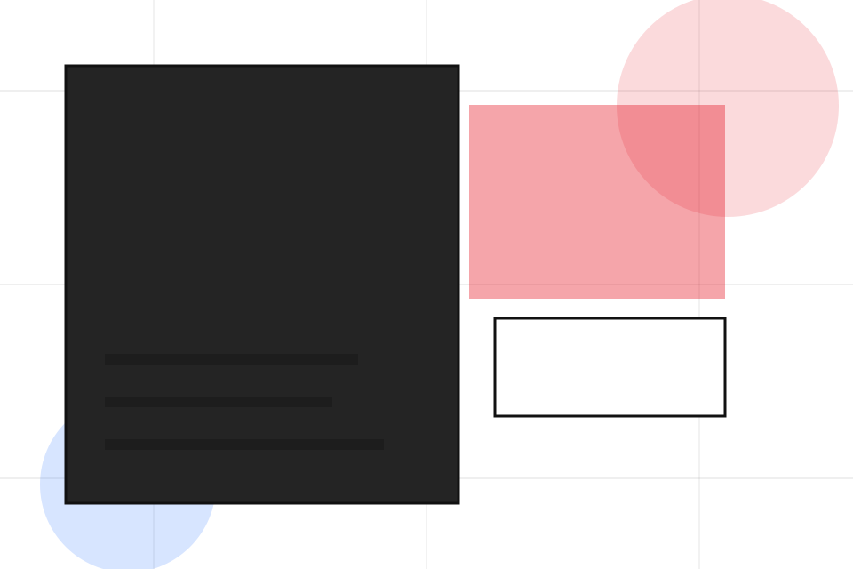
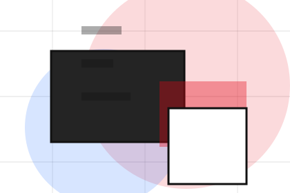
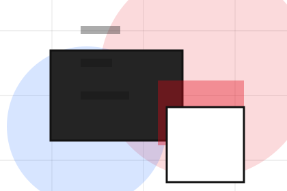
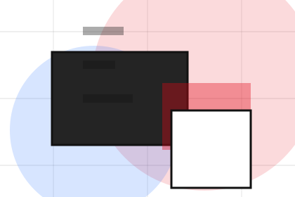
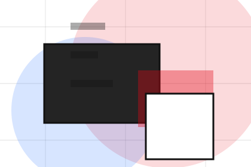
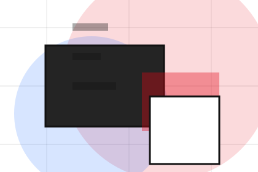
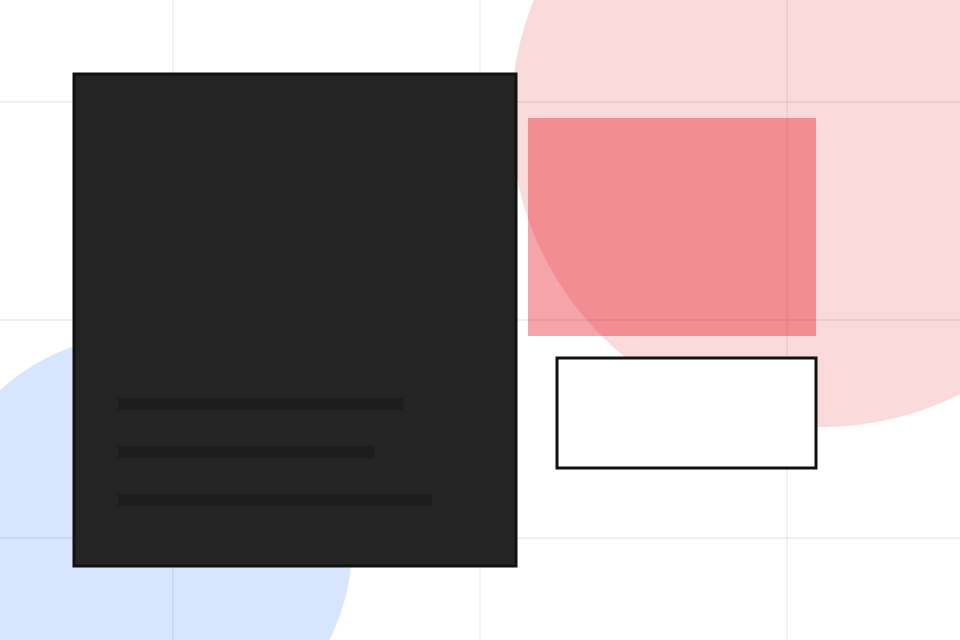
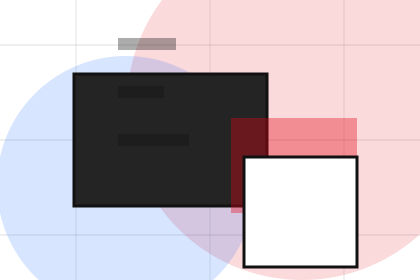
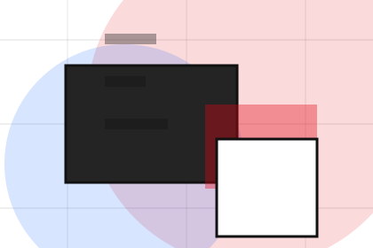
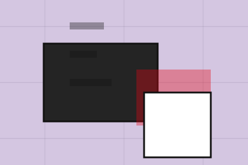

Details
What information helps Studio respond with a useful answer instead of a generic reply.
Contact / 01
Contact opens as a clear creative decision hub: what Studio offers, who it helps, why it matters, and which route to take first.
The first screen combines positioning, proof, primary action, and fast internal navigation, so people can act immediately or compare the rest of the contact route with context.
Typographic work hero
Select the closest route and Studio keeps the next step, proof, and follow-up expectation aligned with taste and production trust.

Contact / 02
Project makes the contact path concrete: what to send, how the response works, and what Studio needs before visitors start the project.
The section reduces contact friction by naming the channel, expected detail, privacy path, and response expectation instead of dropping visitors into a generic form.
Start ProjectWhat information helps Studio respond with a useful answer instead of a generic reply.
How the visitor should think about response, urgency, location, or availability.
The expected next message keeps scope, timing, and the first practical step clear.
Contact / 03
Timeline explains the operating sequence so visitors can see how the first request becomes a clear recommendation and follow-up.
The steps are written from the visitor side: what they do first, what Studio clarifies, what they receive, and how support continues.
Start ProjectHow visitors begin this route and what detail is useful at the first step.
What Studio reviews, filters, or explains before recommending the next move.
What the visitor receives afterward, including support, proof, or a handoff to the next page.
Contact / 04
Budget makes the contact path concrete: what to send, how the response works, and what Studio needs before visitors start the project.
The section reduces contact friction by naming the channel, expected detail, privacy path, and response expectation instead of dropping visitors into a generic form.
Start Project

What information helps Studio respond with a useful answer instead of a generic reply.
Contact / 05
Style makes the contact path concrete: what to send, how the response works, and what Studio needs before visitors start the project.
The section reduces contact friction by naming the channel, expected detail, privacy path, and response expectation instead of dropping visitors into a generic form.
Start ProjectWhat information helps Studio respond with a useful answer instead of a generic reply.

How the visitor should think about response, urgency, location, or availability.

The expected next message keeps scope, timing, and the first practical step clear.
Contact / 06
Uploads makes the contact path concrete: what to send, how the response works, and what Studio needs before visitors start the project.
The section reduces contact friction by naming the channel, expected detail, privacy path, and response expectation instead of dropping visitors into a generic form.
Start ProjectWhat information helps Studio respond with a useful answer instead of a generic reply.
How the visitor should think about response, urgency, location, or availability.

The expected next message keeps scope, timing, and the first practical step clear.
Contact / 07
Response makes the contact path concrete: what to send, how the response works, and what Studio needs before visitors start the project.
The section reduces contact friction by naming the channel, expected detail, privacy path, and response expectation instead of dropping visitors into a generic form.
Start ProjectWhat information helps Studio respond with a useful answer instead of a generic reply.
How the visitor should think about response, urgency, location, or availability.
The expected next message keeps scope, timing, and the first practical step clear.
Contact / 08
Form makes the contact path concrete: what to send, how the response works, and what Studio needs before visitors start the project.
The section reduces contact friction by naming the channel, expected detail, privacy path, and response expectation instead of dropping visitors into a generic form.
Start ProjectStudio keeps form practical: send the key details, choose the right contact route, and know what kind of reply to expect.
Start Project
Contact / 09
Submit makes the contact path concrete: what to send, how the response works, and what Studio needs before visitors start the project.
The section reduces contact friction by naming the channel, expected detail, privacy path, and response expectation instead of dropping visitors into a generic form.
Start Project
What information helps Studio respond with a useful answer instead of a generic reply.
How the visitor should think about response, urgency, location, or availability.

The expected next message keeps scope, timing, and the first practical step clear.
Contact / 10
Studio closes the contact route with a clear action, a quick reminder of the value, and a low-friction way to start the project.
Visitors who are ready can use the primary action. Visitors who are still comparing can scan the section links, proof, and support routes before they start the project.
Start ProjectThe final block keeps the choice simple: act now, compare one more proof route, or send enough detail for a focused response.
Start Projecttaste and production trust
A creative portfolio with identity-led project tiles, typographic scale, lightbox logic, and studio enquiry. Contact ends with a direct path to start the project, plus enough context for visitors who still need to compare.

Start ProjectInformation is provided for planning and should be reviewed for the final client, location, and operating rules.